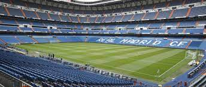

Identificado por su color blanco —del que recibe el apelativo de «blancos» o «merengues»—, es uno de los cuatro clubes profesionales de fútbol del país cuya entidad jurídica no es la de sociedad anónima deportiva (S. A. D.), ya que su propiedad recae en sus más de 90 000 socios. Otra salvedad comparte con el Athletic Club y el Fútbol Club Barcelona al participar sin interrupción en la máxima categoría de la Liga Nacional de Fútbol Profesional, la Primera División de España, desde su establecimiento en 1929. En ella posee los honores de haber sido el primer líder histórico de la competición, el de club con más títulos, y el de la máxima puntuación en una sola edición.
Abocado desde sus inicios al desarrollo del fútbol pronto adquirió un carácter multideportivo y desarrolló varias otras disciplinas que fueron desapareciendo con el devenir de los años, a excepción de la sección de baloncesto, denominada Real Madrid Baloncesto. Hubo varias especulaciones en la historia reciente de la entidad sobre la posibilidad de recuperar algunas de ellas como la sección de balonmano, o la sección de rugby que no llegaron a materializarse, al contrario que una sección femenina de fútbol, parcela que desde los años 2010 el club trabajaba por crear con una base desde el ciclo formativo hasta la máxima categoría. Finalmente en 2019, y tomando otra de las posibles vías para su creación, se produjo la fusión por absorción del Club Deportivo TACON aprobándose en una reunión extraordinaria por parte de los socios compromisarios y conformar así el Real Madrid Club de Fútbol femenino.
Es miembro creador, fundador y cofundador de varias de las competiciones españolas más longevas antes de la existencia de los pertinentes órganos rectores: el Campeonato Regional Centro, o la Copa de España. A nivel internacional fue uno de los miembros fundadores de la FIFA, estamento que le concedió la Orden del Mérito por su especial relevancia en el fútbol y lo señala como uno de los «clubes clásicos» de España tras colaborar en el nacimiento de algunas de las competiciones o asociaciones más prestigiosas como la Copa de Europa, la Copa Intercontinental o la Asociación de Clubes Europeos.
En cuanto a los logros deportivos, es una de las entidades más laureadas y reconocidas del mundo en ambas disciplinas, y ha sido galardonado a nivel futbolístico nacional e internacional por la FIFA como el Mejor Club del siglo XX, como el Mejor Club Europeo y Mundial del siglo XX por la Federación Internacional de Historia y Estadística de Fútbol (IFFHS), y como el mejor Club del Siglo XXI por la organización Globe Soccer. Entre ambas disciplinas suma un total de once campeonatos mundiales y veinticuatro Copas de Europa, más que ningún otro club europeo en el conjunto de ambos deportes, situándose décimo en palmarés polideportivo si se toman en cuenta secciones que el club no posee. A nivel nacional es el club español más laureado.
Diecisiete exintegrantes del club fueron incluidos en el Salón de la Fama FIFA, un proyecto dedicado a preservar la memoria de relevantes personajes de la historia del fútbol, resaltando algunos como «decanos» por su especial trascendencia, o la del propio club como entidad.

Santiago Bernabeu, estadio del Real Madrid C.F
Un 33 % de los aficionados al fútbol encuestados a fecha de 2021 en España por el portal de estadísticas de mercado y opinión Statista lo señalan como el club más popular, mientras que a nivel internacional es también una de las entidades más reconocidas del mundo con 500 millones de seguidores estimados en 2020. El número de simpatizantes, con cerca de 20 millones de visitas mensuales en Google, favorece que sea una de las sociedades deportivas con mayor valor en el mercado y una de las que más ganancias obtiene anualmente. Su valor se tasa en unos 5100 millones de dólares y sus ingresos son superiores a los setecientos millones de euros por temporada, con una cantidad estimada de 653 millones sin contar traspasos de jugadores en el curso 2020-21. Posee un presupuesto de 695 millones —paliado por la pandemia de covid-19 y que hubiera ascendido hasta superar los 900 millones en condiciones de normalidad— mientras que adquirió deuda neta por primera vez en cinco años —de 46 millones, también como repercusión del covid-19, y asumible en parámetros de solvencia—. Su cotización como club futbolístico con más valor es únicamente superado en comparativa por los Dallas Cowboys de fútbol americano y los New York Yankees de béisbol, mientras que es la decimoquinta marca más valiosa de España, la primera del sector deportivo.